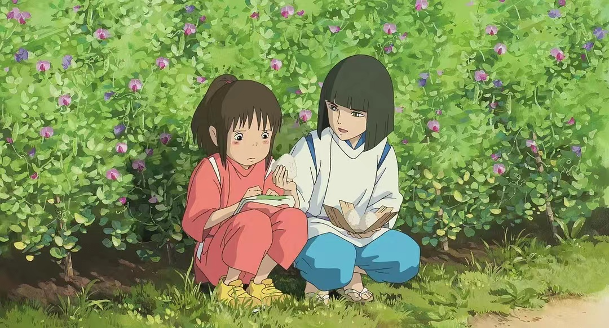

千与千寻
有点娇气任性的10岁少女千寻跟随父母搬往新家，途中误入一座神庙，来到了另一个世界：一条专门给神仙提供服务的热闹非凡的浴场街。双亲因为吃了给神准备的美食而被变成了猪。千寻仓皇逃出，此时，一个叫白的男孩出现并救了她，在白帮助下千寻得以安身。为了等待机会救出父母回到自己的世界，首先要为掌管镇中大浴场的魔女汤婆婆工作，第二要被她剥夺名字，千寻便改名为“千”。在这里有指导她工作的小玲、负责煲洗澡水的锅炉爷爷、煤炭屎鬼、以及入侵浴场捣乱的无面男等。在大家的激励下，千寻以自己的纯真之心屡屡化险为夷，并交到了许多新朋友。最终，千寻拯救了白，发现了他的真实身份。 然而要救出双亲，她还必须面临严酷的考验。